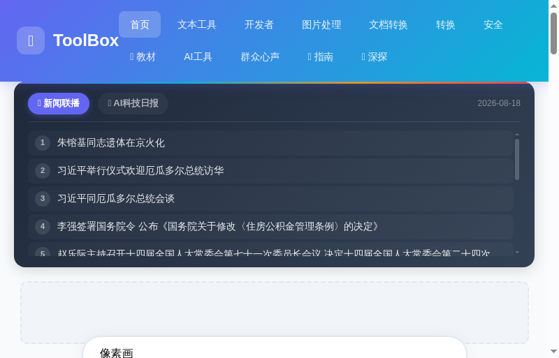
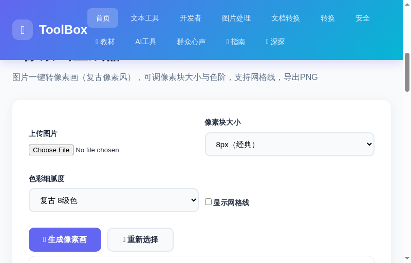
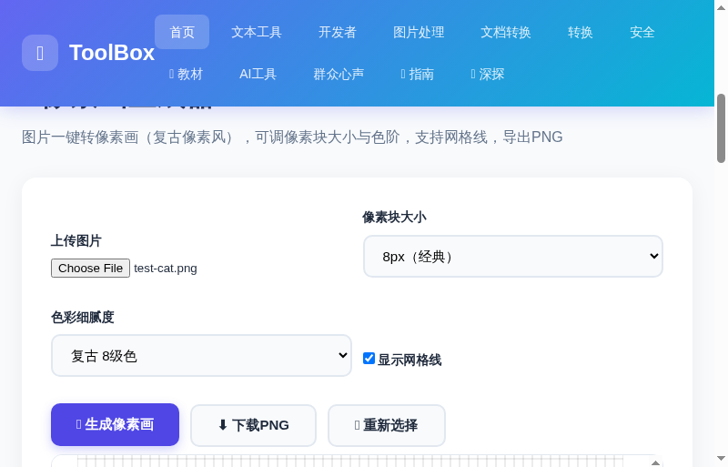

像素画生成器：3步把照片变成复古像素风
还在花 10 美元订阅 PixelMe、PixelIt 这类像素画工具？其实把一张普通照片变成复古像素风、马赛克拼贴画，3 步就能免费搞定——而且全程在浏览器本地完成，图片根本不会上传到任何服务器。
像素画生成器 是 ToolBox 内置的免费像素风转换工具。上传任意图片，选择像素块大小和色彩细腻度，点击生成，一张带着浓郁 8-bit 复古气息的像素画就出现了。可以下载无损 PNG，用于头像、壁纸、游戏素材、纪念品打印……玩法超多。
找到「像素画生成器」
进入 ToolBox 首页，点击顶部导航的「图片处理」分类，在工具列表中找到「👾 像素画生成器」卡片；也可以直接在首页搜索框输入「像素」快速定位。

打开后进入工具界面，从上到下依次是：上传图片、像素块大小、色彩细腻度、网格线开关 和 预览画布。右上角还有「生成像素画」「下载PNG」「重新选择」三个按钮。

上传图片，调好「像素味」参数
点击「选择文件」上传一张照片（支持 JPG/PNG 等常见格式）。上传后按照想要的效果调节两个关键参数：
🎲 像素块大小 —— 决定颗粒感
| 选项 | 效果 | 推荐场景 |
|---|---|---|
| 4px（细腻） | 颗粒最小，接近插画感 | 人像、细节丰富的照片 |
| 8px（经典） | 标准像素风，最百搭 | 默认选项，绝大多数图都适合 |
| 12px（粗犷） | 颗粒感明显 | 头像、图标、复古贴纸 |
| 16px（马赛克） | 大果粒马赛克 | 追求夸张像素效果 |
| 24px（超大块） | 超大胆像素 | 大幅海报、像素字背景 |
🎨 色彩细腻度 —— 决定色块丰富度
从「极简 4 级色」到「全彩 256 级」，色阶越高颜色过渡越平滑、越接近原图；色阶越低越有复古游戏机的粗糙感。经典像素游戏风推荐 8 级色（复古）。
生成、对比、下载 PNG
点一下「👾 生成像素画」，像素风效果立刻呈现在画布上。下面是同一张图在默认参数下的生成效果：
如果觉得颗粒太密看不清「马赛克感」，可以勾选「显示网格线」，画布上会叠加强化像素格的辅助线，特别适合需要数格子精确创作、或者想看清每个色块的场景：

满意之后点击「⬇️ 下载PNG」，一张无损 PNG 就会保存到你的电脑（尺寸与原图同宽高）。想换一张图重新开始？点「🔄 重新选择」即可。
🎯 像素画的 5 个实用场景
❓ 常见问题
Q：图片会传到服务器吗？隐私安全吗？
完全不会。像素画生成器是纯前端工具，图片只在你自己的浏览器内存里被处理，不上传任何服务器。可以放心处理私人照片。
Q：生成的图片是什么格式？能放大当海报吗？
下载的是无损 PNG，尺寸与上传原图相同。像素风格本身是「方块放大」效果，输出图片放大后依然清晰锐利；想要大尺寸海报，上传大图即可。
Q：为什么我生成的图颜色和原图差很多？
这是像素画风格的正常效果——色阶越低，颜色越「概括」。如果你想要更接近原图的颜色，把「色彩细腻度」调到 64 级或 256 级全彩即可。
👾 现在就上传一张照片，生成属于你的复古像素画吧
🎨 去生成像素画 →